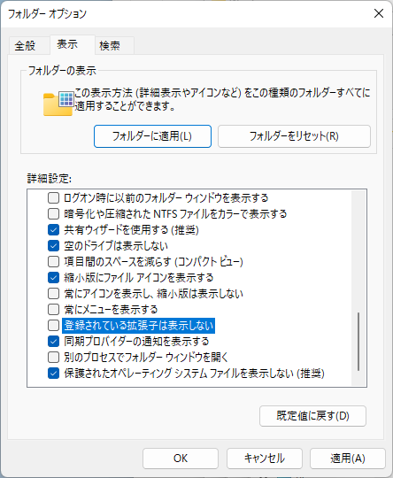

read.csv("addresses.csv")ファイル操作
今回は，Rにおけるファイル操作について学びます。 とくにRのコンソールがいまどこにいるかを意識していないと，ファイルの読み書きに支障を来します。 コマンドラインに不慣れな人はこのあたりで躓く可能性があります。
1 ファイルの読み込み
CSV Files から，任意のCSVファイルをダウンロードします。 これをRに読み込んでみましょう。 例えば，addresses.csvをダウンロードした場合，次のコマンドで読み込めます。
read.csv("") にある2つの " の間に，ダウンロードしたファイルの名前を入れます。 拡張子は省略してはいけません。 もし拡張子を非表示にするようにパソコンが設定されている場合は，必ず表示する設定に変更してください。

上のコマンドを実行したとき，ファイルが見つからないというエラーが返ってくる場合，対処方法は2つあります。
- ダウンロードしたファイルを作業ディレクトリ（working directory）に移動する。
- ダウンロードしたファイルへの絶対パスを指定する。
2 ディレクトリ構造とファイル管理の基礎
そもそもの話として，CUI に慣れていない人は，このファイル操作の内容がさっぱり分からないかもしれません。 現代のOSは，GUI であるため，無理もない話です。 そこで，ここで簡単に CUI の話をしておきます。
2.1 ディレクトリ構造
まず，Windowsのディレクトリ構造について説明します。 macOSもほぼ同じです。
Rを起動した時，Rコンソールは次の場所（フォルダ）にいます。
graph LR C[C:] --- Users Users --- ユーザ名 ユーザ名 --- OneDrive OneDrive --- doc[ドキュメント] style doc fill:#f96,stroke:#333
「いる」というのは，Explorer（Windowsの場合）やFinder（macOSの場合）でその場所を開いていることと同じと思ってください。 Rは，この場所で作業をします。 ここで，ユーザ名 は今使っているパソコンにログインしているユーザ名のことで，パソコンによって異なります。 OneDriveで同期していない人は，次のように次の場所にいるかもしれません。
graph LR C[C:] --- Users Users --- ユーザ名 ユーザ名 --- Documents style Documents fill:#f96,stroke:#333
以下では，OneDriveで同期していない人に限定した説明となっている場合がありますので，適宜読み替えてください。
この図の線の部分を / で置き換えると，CUIで表現できます。 つまり，上の図はCUIでは C:/Users/ユーザ名/OneDrive/ドキュメント と表現します（Windowsの場合，/ を ¥ や \ で表現する場合もあります）。
一方，Webブラウザを使ってダウンロードしたファイルは，デフォルトでは次の図の Downloads にあるはずです。
graph LR C[C:] --- Users Users --- ユーザ名 ユーザ名 --- OneDrive OneDrive --- doc[ドキュメント] ユーザ名 --- dow[Downloads] style dow fill:#f96,stroke:#333
Downloads はカタカナで ダウンロード という表記になっているかもしれません。
以下の説明では，これらのことが理解できていることを前提としています。
2.2 ファイル管理
続いて，ファイル管理について説明します。 これは，Rとは直接は関係ありません。 パソコンの中のファイルの整理方法の説明です。
人によってファイルの整理方法は異なります。 このため，ここに書いてある通りにすべきということではありません。 ただし，以下の説明はここに書いてあることを想定しています。
自分で作ったWordやExcelのファイルだけでなく，インターネットからダウンロードしたファイルは，ドキュメント 以下の関連するフォルダに移動させることを強くおすすめします。 そうしないと，ダウンロード フォルダが訳が分からない状態になってしまいます。
ドキュメント フォルダも同様で，何もルールを決めずにファイルを保存していると，何が何だか分からなくなってしまいます。 そこで，ドキュメント の中にフォルダを作ります。 フォルダの名前は自分で決めてください。 そのフォルダに関連するファイルをフォルダの中に入れていきます。 これらの作業は，Explorer（またはFinder）上で，マウスやトラックパッドを使って行ってください。 そのフォルダの中に，新たなフォルダを作ります。 このフォルダの名前も自分で決めてください。 こうして作成したフォルダは，ツリー状に表現できます。
前節の図の ドキュメント 以下のフォルダ構造の例を示すと，以下のようになります。
flowchart LR ドキュメント --- 大学 ドキュメント --- 就職活動 大学 --- 学部 大学 --- 大学院 大学院 --- 修士課程1年 大学院 --- 修士課程2年 修士課程1年 --- 授業科目A 修士課程1年 --- 授業科目B 授業科目A --- lastweek[2023年6月21日] 授業科目A --- today[2023年6月28日] 授業科目A --- data style lastweek fill:#f96,stroke:#333 style today fill:#f96,stroke:#333 style data fill:#f96,stroke:#333
就職活動 を 大学 の中に入れたい人やまったく別のフォルダ構造にしたい人もいるでしょう。 自分の好きなようにしてください。 ただし，以下の説明では，日付のフォルダに，Rスクリプトや授業に関連するファイルを入れ，data フォルダにダウンロードしたファイルを入れることを想定した説明をします。
自分なりに分かりやすいフォルダを作って，ファイルを整理してください。
3 作業ディレクトリ
対処方法の1つ目は，Explorer（またはFinder）でのファイル操作を伴います。 ダウンロードしたCSVファイルがどこにあるか分からない場合は，Webブラウザの設定を確認してください。 ダウンロードしたCSVファイルがどこにあるかは分かったとして，そのファイルをどこに移動すればよいでしょうか。 ファイルの移動先は，以下のコマンドの返り値が指すディレクトリです（ディレクトリはフォルダと同じ意味です。正式にはディレクトリと呼び，GUIを使うときはフォルダと呼ぶことが多いです）。
getwd()ただし，このコマンドの返り値のディレクトリで本当によいかは，その人によります。 といっても分からないと思いますので，作業ディレクトリは次の方法で変更しましょう。
Windowsの場合，メニューの[ファイル]→[ディレクトリの変更…]から作業ディレクトリを変更します。 macOSの場合，メニューの[その他]→[作業ディレクトリの変更…]から作業ディレクトリを変更します。 ここで，先ほどCSVファイルがダウンロードされたディレクトリを指定すればよいです。 しかしながら，ここでは，作業ディレクトリをどこかに決めることをおすすめします。 作業ディレクトリはRを終了すると初期化されます（デフォルト値に戻る）ので，Rを起動するたびに毎回，この操作を行います。 毎回同じ場所でもよいですし，通常は目的（プロジェクト，論文，授業など）ごとに変更すべきでしょう。 どこを作業ディレクトリにするかは自分で決めてください。 Rに関連するファイルしか存在しないディレクトリを作成しておくと，作業がしやすいです。
例えば，ドキュメント ディレクトリの中に授業のディレクトリを作成し，その中に授業の回数ごとにディレクトリを作成する方法が考えられます。 そこでは，Rのプログラムに関するファイルを作成しておくとよいでしょう。 Rのプログラムが書かれたもの（関数やコマンドのかたまり）を，コードと言ったり，スクリプトと言ったりします。 これらスクリプトが書かれたファイルは，拡張子を R として，文字コードがUTF-8のテキストファイルとして保存します。 拡張子が R のファイルは，ダブルクリックして開いても構いませんが，テキストエディタで開くことをおすすめします。 テキストエディタは，Windowsの場合は 秀丸エディタ が有名で，おすすめです。 秀丸エディタは有料ですが，学生は支払いが免除されるはずでし，支払わなくても警告が出たときにその警告を閉じれば作業できます（メモ帳は改行コードのバグがあるためおすすめしません）。 macOSの場合はOS標準のテキストエディット.appで問題ありません。 最近は，OSに関係なく，Visual Studio Code を使うのもよいかもしれません。 Rのスクリプトに書かれたコードを必要な部分だけコピーして，Rコンソールにペーストしてから，実行してください。 Visual Studio Code には，お節介機能が多いため，Rを直接実行できますが，Rに慣れないうちはRコンソールから実行するようにしてください。
上記のようなマウス操作をしない方法もあり，操作をRコンソール内で完結させることができます。 次のコマンドを知っておくと便利です。
setwd("")このコマンドの "" の中には，自分のパソコンのディレクトリ構造の中のある特定の場所を指定します。 この場所は，Windowsなら C: から始まり，macOSなら / から始まる階層構造における位置のことで，パスと呼びます。 このパスはファイル名ではなく，ディレクトリ名で終わることに注意してください。 ここで行っているのは，作業ディレクトリの変更です。
実際の使用時には，例えば，次のように書きます。
setwd("C:/Users/ユーザ名/OneDrive/ドキュメント")OneDriveで同期していない人は次のように書きます。
setwd("C:/Users/ユーザ名/Documents")これは，次のコマンドと同じです。
setwd("~")"~" はホームディレクトリを意味します。
4 絶対パス
エラーへの対処方法の2つ目は，Rコンソールの場所は移動せずに，コマンド実行時に絶対パスを指定する方法です。 これは，次のコマンドによって実現します。
read.csv("C:/Users/ユーザ名/Downloads/addresses.csv") # Windowsの例
# read.csv("/Users/ユーザ名/Downloads/addresses.csv") # macOSの例これは，次のファイルを読んでいることを意味します。
graph LR C[C:] --- Users Users --- ユーザ名 ユーザ名 --- Downloads Downloads --- file[addresses.csv] style file fill:#f96,stroke-width:0px
Windowsの場合（おそらくWindows 11以降），ダウンロードしたファイルを右クリックして，「パスのコピー」をクリックすると，クリップボードにそのファイルの絶対パスがコピーされます。 コピーした後，read.csv("") にある2つの " の間にペーストしてください。 macOSの場合，Terminal.appを起動して，そのウィンドウにダウンロードしたファイルをドラッグ＆ドロップすれば，絶対パスが表示されます。 絶対パス正しければ，上のコマンドでCSVファイルの中身が表示されるはずです。
実際には，Rを起動した直後に作業ディレクトリを一度変更し，その後は相対パスを変更しながら，ファイルの読み書きをすることになるはずです。 なお，こうした煩雑さを緩和する目的で，here パッケージがありますので，知りたい人は調べてください。
5 相対パス
相対パスは現在の作業ディレクトリを起点として，相対的にどこのファイルを読み書きするかを指定する考え方です。 Rによるディレクトリの作成と合わせて考えると非常に便利です。
例えば，作業ディレクトリの下に新たなディレクトリを作成し，そこにファイルをダウンロードした後に，そのファイルを読むには次のようにします。 次のコードを実行する前に，Explorer（またはFinder）で作業ディレクトリを表示させておき，次のコードを実行することで起こる変化を注視してください。
dir.create("./data")
download.file("https://people.sc.fsu.edu/~jburkardt/data/csv/addresses.csv", "./data/addresses.csv")
read.csv("./data/addresses.csv") John Doe X120.jefferson.st. Riverside
1 Jack McGinnis 220 hobo Av. Phila
2 John "Da Man" Repici 120 Jefferson St. Riverside
3 Stephen Tyler 7452 Terrace "At the Plaza" road SomeTown
4 Blankman SomeTown
5 Joan "the bone", Anne Jet 9th, at Terrace plc Desert City
NJ X08075
1 PA 9119
2 NJ 8075
3 SD 91234
4 SD 298
5 CO 123パスの先頭にある . は自分がいるディレクトリを意味する記号です。 このことから，./ は作業ディレクトリを指します。 ./ はなくても構いません。 ただし，"./data" と "data" は同じ意味ですが，"/data" は意味が異なりますので注意してください。 もし dir.create("/data") とした場合は，作業ディレクトリではなく，ルートディレクトリに新たなディレクトリが作成されます（こうした操作はOSにとって脅威となりますので，絶対にやらないでください）。
上述のコードは，dir.create() でディレクトリを作成し，download.file() でファイルをダウンロードした後，read.csv() でダウンロードしたファイルを読み込みます。 このことを図で表現すると，次のようになります。
graph LR C[C:] --- Users Users --- ユーザ名 ユーザ名 --- OneDrive OneDrive --- doc[ドキュメント] doc --- data data --- file[addresses.csv] style data fill:#f96,stroke:#333 style file fill:#f96,stroke-width:0px
Rの作業ディレクトリは ドキュメント ですので，ここから相対的にひとつ下に data というディレクトリを作成し，その中にダウンロードしたファイルを保存し，その保存したファイルを読み込んでいます。 実際には，パソコンの C: の中にファイルはありますが，Rで読み込む際に C: から始める必要はありません。 このことを図で表現すると，次のようになります。
graph LR dot["~"] --- data data --- file[addresses.csv] style data fill:#f96,stroke:#333 style file fill:#f96,stroke-width:0px
~ はホームディレクトリを意味する記号であり，OneDriveで同期している人は "C:/Users/ユーザ名/OneDrive/ドキュメント"，同期していない人は "C:/Users/ユーザ名/Documents" を指します。
先ほどの結果を見て，1行目の左側に数字がついておらず，2行目が1，6行目が6となっています。 これは，Rが1行目をヘッダーとして読み込んでいるという意味です。 これで正しい場合もありますが，この例は1行目もレコードなので，次のようにしなければなりません。
read.csv("./data/addresses.csv", header = FALSE) V1 V2 V3 V4
1 John Doe 120 jefferson st. Riverside
2 Jack McGinnis 220 hobo Av. Phila
3 John "Da Man" Repici 120 Jefferson St. Riverside
4 Stephen Tyler 7452 Terrace "At the Plaza" road SomeTown
5 Blankman SomeTown
6 Joan "the bone", Anne Jet 9th, at Terrace plc Desert City
V5 V6
1 NJ 8075
2 PA 9119
3 NJ 8075
4 SD 91234
5 SD 298
6 CO 123ヘッダーをどうすべきかはファイルによって異なります。 例えば，次の例では，ヘッダーを TRUE にすべきです（省略時のヘッダーは TRUE であるため，省略してもよい）。
download.file("https://people.sc.fsu.edu/~jburkardt/data/csv/airtravel.csv", "./data/airtravel.csv")
read.csv("./data/airtravel.csv", header = TRUE) Month X1958 X1959 X1960
1 JAN 340 360 417
2 FEB 318 342 391
3 MAR 362 406 419
4 APR 348 396 461
5 MAY 363 420 472
6 JUN 435 472 535
7 JUL 491 548 622
8 AUG 505 559 606
9 SEP 404 463 508
10 OCT 359 407 461
11 NOV 310 362 390
12 DEC 337 405 432ヘッダーが数字で始まる場合，先頭に X が付き，文字列に変換されます。 ここで，次のようにあえて間違った読み方をして，結果がどうなるかを確認してください。
read.csv("./data/airtravel.csv", header = FALSE) V1 V2 V3 V4
1 Month 1958 1959 1960
2 JAN 340 360 417
3 FEB 318 342 391
4 MAR 362 406 419
5 APR 348 396 461
6 MAY 363 420 472
7 JUN 435 472 535
8 JUL 491 548 622
9 AUG 505 559 606
10 SEP 404 463 508
11 OCT 359 407 461
12 NOV 310 362 390
13 DEC 337 405 432正しく読み込めたかどうかは，Rの表示と元のCSVファイル（テキストエディタやMicrosoft Excelを使って表示）を比較して確かめてください。 以上の例のように，一度ダウンロードしたファイルは自分のパソコンに残っているため，read.csv() を使って何度も読み直すときに download.file() は必要ありません。 これは，Explorer（またはFinder）における通常のファイル操作と同じです。
ここでよくある例を挙げておきます。 例えば，次のように別のCSVファイルを読み込んでください。
download.file("https://people.sc.fsu.edu/~jburkardt/data/csv/biostats.csv", "./data/biostats.csv")
read.csv("./data/biostats.csv", header = TRUE) Name Sex Age Height..in. Weight..lbs.
1 Alex M 41 74 170
2 Bert M 42 68 166
3 Carl M 32 70 155
4 Dave M 39 72 167
5 Elly F 30 66 124
6 Fran F 33 66 115
7 Gwen F 26 64 121
8 Hank M 30 71 158
9 Ivan M 53 72 175
10 Jake M 32 69 143
11 Kate F 47 69 139
12 Luke M 34 72 163
13 Myra F 23 62 98
14 Neil M 36 75 160
15 Omar M 38 70 145
16 Page F 31 67 135
17 Quin M 29 71 176
18 Ruth F 28 65 131biostats.csv を読み込むと，元のファイルと比較してヘッダーがおかしくなっています。 () とスペースが . に置き換わっていることが分かります。 CSVファイルのヘッダーを変更せずにそのまま読むには，次のようにします。
read.csv("./data/biostats.csv", check.names = FALSE) Name Sex Age Height (in) Weight (lbs)
1 Alex M 41 74 170
2 Bert M 42 68 166
3 Carl M 32 70 155
4 Dave M 39 72 167
5 Elly F 30 66 124
6 Fran F 33 66 115
7 Gwen F 26 64 121
8 Hank M 30 71 158
9 Ivan M 53 72 175
10 Jake M 32 69 143
11 Kate F 47 69 139
12 Luke M 34 72 163
13 Myra F 23 62 98
14 Neil M 36 75 160
15 Omar M 38 70 145
16 Page F 31 67 135
17 Quin M 29 71 176
18 Ruth F 28 65 131ここで，Explorer（またはFinder）から先ほど作成した data フォルダを削除しておいてください。
なお，相対パスの先頭に .. または ../ を書くこともできます。 これらの記号は，作業ディレクトリのひとつ上の階層のディレクトリを意味します。 次のコードは，Rの作業ディレクトリの1つ上の階層に，dataという名前のディレクトリを作成するもので，ファイルの出力先を指定する際に頻繁に使います。
outdir <- "../data"
if (!file.exists(outdir)) {
dir.create(outdir)
}
注意
もし作業ディレクトリがホームディレクトリにある場合（Rを起動してから作業ディレクトリを変更していない場合）は，このコードは実行しないでください。 もし実行してしまった場合は，Explorer（またはFinder）で作業ディレクトリと同じ階層にある data フォルダの中を確認し，何もファイルがなければ data フォルダを削除してください。 ファイルがあれば，他のアプリケーションで使用している可能性があるため，data フォルダを削除せず，残しておいてください。
上記コードの2行目と4行目は，すでにそのディレクトリがある場合は，何もしないことを意味します。 このコマンドを理解するには，条件分岐と ! の意味を正しく理解できなければなりません。 ここで，outdirという名前の変数を作っているのは，それ以降に同じ記述が2回登場するためです。 後になって，もしディレクトリを変更したくなった場合，2箇所修正するよりも1箇所修正する方が間違いが少なくてすみます。
.. の知識を踏まえると，Webブラウザを使ってダウンロードしたファイルを，ホームディレクトリから読み込むことができます。 作業ディレクトリを確実にホームディレクトリにするために，次のコマンドを実行してください。
setwd("~")Webブラウザを使って，CSV Files から，任意のCSVファイルをダウンロードしてください。 このCSVファイルをRに読み込むには，どうすればよいでしょうか。 図で考えると次の相対パスを考えることに他なりません。
graph LR C[C:] --- Users Users --- ユーザ名 ユーザ名 --- OneDrive OneDrive --- doc[ドキュメント] ユーザ名 --- Downloads Downloads --- file[cities.csv] doc -- .. --> OneDrive OneDrive -- .. --> ユーザ名 ユーザ名 --> Downloads Downloads --> file style file fill:#f96,stroke-width:0px linkStyle 6 stroke:red linkStyle 7 stroke:red linkStyle 8 stroke:red linkStyle 9 stroke:red
これをRのコマンドにすると次のようになります。
read.csv("../../Downloads/cities.csv")OneDriveで同期していない人は，ディレクトリをひとつ上がるパスが1つ減ります。
graph LR C[C:] --- Users Users --- ユーザ名 ユーザ名 --- Documents ユーザ名 --- Downloads Downloads --- file[cities.csv] Documents == .. ==> ユーザ名 ユーザ名 ==> Downloads Downloads ==> file style file fill:#f96,stroke-width:0px linkStyle 5 stroke:red linkStyle 6 stroke:red linkStyle 7 stroke:red
read.csv("../Downloads/cities.csv") LatD LatM LatS NS LonD LonM LonS EW City State
1 41 5 59 N 80 39 0 W Youngstown OH
2 42 52 48 N 97 23 23 W Yankton SD
3 46 35 59 N 120 30 36 W Yakima WA
4 42 16 12 N 71 48 0 W Worcester MA
5 43 37 48 N 89 46 11 W Wisconsin Dells WI
6 36 5 59 N 80 15 0 W Winston-Salem NC
7 49 52 48 N 97 9 0 W Winnipeg MB
8 39 11 23 N 78 9 36 W Winchester VA
9 34 14 24 N 77 55 11 W Wilmington NC
10 39 45 0 N 75 33 0 W Wilmington DE
11 48 9 0 N 103 37 12 W Williston ND
12 41 15 0 N 77 0 0 W Williamsport PA
13 37 40 48 N 82 16 47 W Williamson WV
14 33 54 0 N 98 29 23 W Wichita Falls TX
15 37 41 23 N 97 20 23 W Wichita KS
16 40 4 11 N 80 43 12 W Wheeling WV
17 26 43 11 N 80 3 0 W West Palm Beach FL
18 47 25 11 N 120 19 11 W Wenatchee WA
19 41 25 11 N 122 23 23 W Weed CA
20 31 13 11 N 82 20 59 W Waycross GA
21 44 57 35 N 89 38 23 W Wausau WI
22 42 21 36 N 87 49 48 W Waukegan IL
23 44 54 0 N 97 6 36 W Watertown SD
24 43 58 47 N 75 55 11 W Watertown NY
25 42 30 0 N 92 20 23 W Waterloo IA
26 41 32 59 N 73 3 0 W Waterbury CT
27 38 53 23 N 77 1 47 W Washington DC
28 41 50 59 N 79 8 23 W Warren PA
29 46 4 11 N 118 19 48 W Walla Walla WA
30 31 32 59 N 97 8 23 W Waco TX
31 38 40 48 N 87 31 47 W Vincennes IN
32 28 48 35 N 97 0 36 W Victoria TX
33 32 20 59 N 90 52 47 W Vicksburg MS
34 49 16 12 N 123 7 12 W Vancouver BC
35 46 55 11 N 98 0 36 W Valley City ND
36 30 49 47 N 83 16 47 W Valdosta GA
37 43 6 36 N 75 13 48 W Utica NY
38 39 54 0 N 79 43 48 W Uniontown PA
39 32 20 59 N 95 18 0 W Tyler TX
40 42 33 36 N 114 28 12 W Twin Falls ID
41 33 12 35 N 87 34 11 W Tuscaloosa AL
42 34 15 35 N 88 42 35 W Tupelo MS
43 36 9 35 N 95 54 36 W Tulsa OK
44 32 13 12 N 110 58 12 W Tucson AZ
45 37 10 11 N 104 30 36 W Trinidad CO
46 40 13 47 N 74 46 11 W Trenton NJ
47 44 45 35 N 85 37 47 W Traverse City MI
48 43 39 0 N 79 22 47 W Toronto ON
49 39 2 59 N 95 40 11 W Topeka KS
50 41 39 0 N 83 32 24 W Toledo OH
51 33 25 48 N 94 3 0 W Texarkana TX
52 39 28 12 N 87 24 36 W Terre Haute IN
53 27 57 0 N 82 26 59 W Tampa FL
54 30 27 0 N 84 16 47 W Tallahassee FL
55 47 14 24 N 122 25 48 W Tacoma WA
56 43 2 59 N 76 9 0 W Syracuse NY
57 32 35 59 N 82 20 23 W Swainsboro GA
58 33 55 11 N 80 20 59 W Sumter SC
59 40 59 24 N 75 11 24 W Stroudsburg PA
60 37 57 35 N 121 17 24 W Stockton CA
61 44 31 12 N 89 34 11 W Stevens Point WI
62 40 21 36 N 80 37 12 W Steubenville OH
63 40 37 11 N 103 13 12 W Sterling CO
64 38 9 0 N 79 4 11 W Staunton VA
65 39 55 11 N 83 48 35 W Springfield OH
66 37 13 12 N 93 17 24 W Springfield MO
67 42 5 59 N 72 35 23 W Springfield MA
68 39 47 59 N 89 39 0 W Springfield IL
69 47 40 11 N 117 24 36 W Spokane WA
70 41 40 48 N 86 15 0 W South Bend IN
71 43 32 24 N 96 43 48 W Sioux Falls SD
72 42 29 24 N 96 23 23 W Sioux City IA
73 32 30 35 N 93 45 0 W Shreveport LA
74 33 38 23 N 96 36 36 W Sherman TX
75 44 47 59 N 106 57 35 W Sheridan WY
76 35 13 47 N 96 40 48 W Seminole OK
77 32 25 11 N 87 1 11 W Selma AL
78 38 42 35 N 93 13 48 W Sedalia MO
79 47 35 59 N 122 19 48 W Seattle WA
80 41 24 35 N 75 40 11 W Scranton PA
81 41 52 11 N 103 39 36 W Scottsbluff NB
82 42 49 11 N 73 56 59 W Schenectady NY
83 32 4 48 N 81 5 23 W Savannah GA
84 46 29 24 N 84 20 59 W Sault Sainte Marie MI
85 27 20 24 N 82 31 47 W Sarasota FL
86 38 26 23 N 122 43 12 W Santa Rosa CA
87 35 40 48 N 105 56 59 W Santa Fe NM
88 34 25 11 N 119 41 59 W Santa Barbara CA
89 33 45 35 N 117 52 12 W Santa Ana CA
90 37 20 24 N 121 52 47 W San Jose CA
91 37 46 47 N 122 25 11 W San Francisco CA
92 41 27 0 N 82 42 35 W Sandusky OH
93 32 42 35 N 117 9 0 W San Diego CA
94 34 6 36 N 117 18 35 W San Bernardino CA
95 29 25 12 N 98 30 0 W San Antonio TX
96 31 27 35 N 100 26 24 W San Angelo TX
97 40 45 35 N 111 52 47 W Salt Lake City UT
98 38 22 11 N 75 35 59 W Salisbury MD
99 36 40 11 N 121 39 0 W Salinas CA
100 38 50 24 N 97 36 36 W Salina KS
101 38 31 47 N 106 0 0 W Salida CO
102 44 56 23 N 123 1 47 W Salem OR
103 44 57 0 N 93 5 59 W Saint Paul MN
104 38 37 11 N 90 11 24 W Saint Louis MO
105 39 46 12 N 94 50 23 W Saint Joseph MO
106 42 5 59 N 86 28 48 W Saint Joseph MI
107 44 25 11 N 72 1 11 W Saint Johnsbury VT
108 45 34 11 N 94 10 11 W Saint Cloud MN
109 29 53 23 N 81 19 11 W Saint Augustine FL
110 43 25 48 N 83 56 24 W Saginaw MI
111 38 35 24 N 121 29 23 W Sacramento CA
112 43 36 36 N 72 58 12 W Rutland VT
113 33 24 0 N 104 31 47 W Roswell NM
114 35 56 23 N 77 48 0 W Rocky Mount NC
115 41 35 24 N 109 13 48 W Rock Springs WY
116 42 16 12 N 89 5 59 W Rockford IL
117 43 9 35 N 77 36 36 W Rochester NY
118 44 1 12 N 92 27 35 W Rochester MN
119 37 16 12 N 79 56 24 W Roanoke VA
120 37 32 24 N 77 26 59 W Richmond VA
121 39 49 48 N 84 53 23 W Richmond IN
122 38 46 12 N 112 5 23 W Richfield UT
123 45 38 23 N 89 25 11 W Rhinelander WI
124 39 31 12 N 119 48 35 W Reno NV
125 50 25 11 N 104 39 0 W Regina SA
126 40 10 48 N 122 14 23 W Red Bluff CA
127 40 19 48 N 75 55 48 W Reading PA
128 41 9 35 N 81 14 23 W Ravenna OH ここで，.. という記号は，そのディレクトリがどのような名前であるかは気にすることなく，ひとつ上の階層のディレクトリを指定できることができるという非常に便利な性質を持っています。